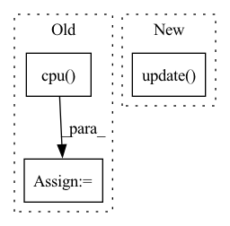

Pattern ID :19409
Before Change
record_tensor = torch.empty([0])
record_flag = (not only_rank_0) | (dist.get_rank(chunk.torch_pg) == 0)
if record_flag:
record_tensor = temp_chunk[tensor_info.offset:tensor_info.end].view(tensor.shape).cpu()
assert tensor not in param_to_save_data
param_to_save_data[tensor] = record_tensor
del temp_chunk
return param_to_save_dataAfter Change
param_to_save_data = dict()
chunk_list = self.chunk_manager.get_chunks(param_list)
for chunk in chunk_list:
param_to_save_data.update( self._get_chunk_to_save_data(chunk, only_rank_0))
return param_to_save_data
def _save_to_state_dict(self, destination, prefix, keep_vars, only_rank_0=True):
rSaves module state to `destination` dictionary, containing a stateIn pattern: SUPERPATTERN
Frequency: 3
Non-data size: 3
Instances Fragment ID: 63346471
Project Name: hpcaitech/colossalai
Commit Name: f313babd11f8137c2496e7dc54c6b61604cd3672
Time: 2023-04-17
Author: lhx0217@gmail.com
File Name: colossalai/zero/gemini/gemini_ddp.py
M Class Name: ZeroDDP
N Class Name: ZeroDDP
M Method Name: _get_param_to_save_data(3)
N Method Name: _get_param_to_save_data(3)
M Parent Class: ColoDDP
N Parent Class: ColoDDP
M File Name: colossalai/zero/gemini/gemini_ddp.py
N File Name: colossalai/zero/gemini/gemini_ddp.py
M Start Line: 243
M End Line: 257
N Start Line: 270
N End Line: 273
Before Change
// if t % self.update_each == 0:
// self.eprop._make_optim_step()
self.eprop._make_optim_step()
x_pred = torch.stack([t.cpu() for t in x_pred], dim=1)
pvar = PVarianceLoss()(x_pred, self.true_time_series.to(x_pred.device))
mse = torch.nn.MSELoss()(x_pred, self.true_time_series.to(x_pred.device))
progress_bar.set_postfix({"pvar": to_numpy(pvar).item(), "MSE": to_numpy(mse).item()})After Change
self.eprop.on_batch_begin(self)
inputs = self.true_time_series[:, 0, :].clone().unsqueeze(1).to(self.model.device)
x_pred = self.model.get_prediction_trace(inputs)
self.current_training_state = self.current_training_state.update(pred_batch=x_pred)
self.eprop.on_batch_end(self)
self.eprop.on_train_end(self)
pvar = PVarianceLoss()(x_pred, self.true_time_series.to(x_pred.device)) Fragment ID: 63346468
Project Name: neurotorch/neurotorch
Commit Name: da8d4065502c761ccf6e28e47dd189e3b5488140
Time: 2023-01-31
Author: 50332514+JeremieGince@users.noreply.github.com
File Name: src/neurotorch/learning_algorithms/debug_e_prop_v5.py
M Class Name: SimplifiedEpropFinal
N Class Name: SimplifiedEpropFinal
M Method Name: train(4)
N Method Name: train(4)
M Parent Class:
N Parent Class:
M File Name: src/neurotorch/learning_algorithms/debug_e_prop_v5.py
N File Name: src/neurotorch/learning_algorithms/debug_e_prop_v5.py
M Start Line: 120
M End Line: 153
N Start Line: 115
N End Line: 144
Before Change
predicted_probs, predicted = self.get_predicted(outputs)
y_pred_probs += list(predicted_probs.cpu() .detach().numpy())
y_pred += list(predicted.cpu().detach().numpy())
y_true += list(labels.cpu().detach().numpy())
After Change
predicted_probs, predicted = self.get_predicted(outputs)
y_pred = list(predicted.cpu().detach().numpy())
y_true = list(labels.cpu().detach().numpy())
self.running_metrics.update( y_true, y_pred)
if criterion:
total_loss = total_loss / len(dataloader.dataset)
Fragment ID: 63346476
Project Name: biasvariancelabs/aitlas
Commit Name: 20fa9fcb308eaf8f8d4d8f8e197f761588d8a051
Time: 2021-01-29
Author: ivica.dimitrovski@gmail.com
File Name: aitlas/base/models.py
M Class Name: BaseModel
N Class Name: BaseModel
M Method Name: evaluate_model(5)
N Method Name: evaluate_model(5)
M Parent Class: nn.Module,Configurable
N Parent Class: nn.Module,Configurable
M File Name: aitlas/base/models.py
N File Name: aitlas/base/models.py
M Start Line: 196
M End Line: 235
N Start Line: 198
N End Line: 225